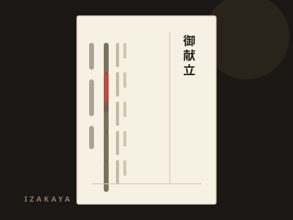
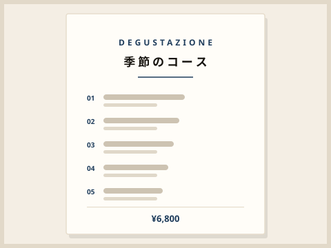
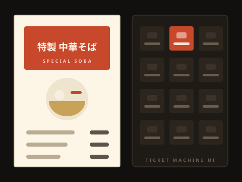
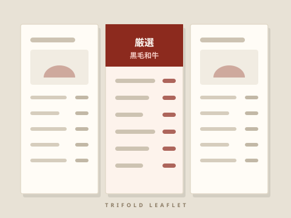
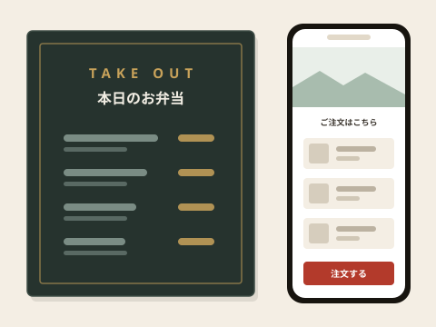
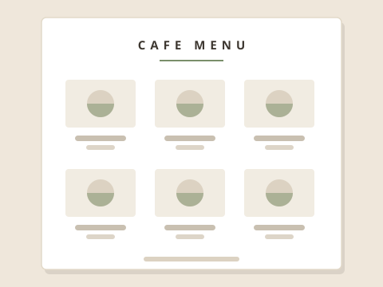

名物料理を、一番上に戻した。
品数が92点まで増え、看板の馬刺しが下段に埋もれていた状態。注文数の少ない31品を整理し、主力3品を一枚目に集約しました。
- 客単価の変化（3か月後）
- 3,180円 → 3,620円
デザインの見た目だけでなく、どんな課題があり、何を変え、結果どうなったかを掲載しています。ご自身のお店に近い事例からご覧ください。
Menu design
課題・実施したこと・その後の変化をあわせて掲載しています。

品数が92点まで増え、看板の馬刺しが下段に埋もれていた状態。注文数の少ない31品を整理し、主力3品を一枚目に集約しました。

コースが2種類しかなく、比較の基準がない状態。価格帯を3段階に整理し、狙いのコースを中位に置きました。

行列時に注文が滞っていた券売機を再設計。特製ラーメンとトッピングを隣接させ、視線の流れに沿って配置しました。

単品表とコース表が別紙で、比較しづらい状態。三つ折りにまとめ、開いた面でコースの価値が伝わる構成にしました。

黒板とネット注文ページのデザインがばらばらで、同じ店と認識されにくい状態。写真と配色を統一しました。

全品に写真を載せていたため、どれも同じ印象に。看板メニュー6品だけ写真を残し、他は文字組みで整理しました。
Voice
正直、メニューを作り直すだけで何か変わるのか半信半疑でした。 でも「なぜこの並びなのか」を数字で説明してもらえたので納得できました。 いまは自分でも季節メニューを差し替えられるようになっています。
SNSは何を投稿すればいいか分からず止まっていました。 月に何をどれだけ出すかを決めてもらえたので、スタッフでも回せています。 毎月のレポートで、やったことと結果が一致するのが安心です。
「品数を減らしましょう」と言われたときは驚きましたが、 仕込みが楽になったうえに売上は下がりませんでした。 減らす提案をしてくれる相手は、なかなかいないと思います。
※ 掲載している数値は各店舗のPOSデータをもとにした実測値です。 効果は業態・立地・時期によって異なり、同じ結果をお約束するものではありません。